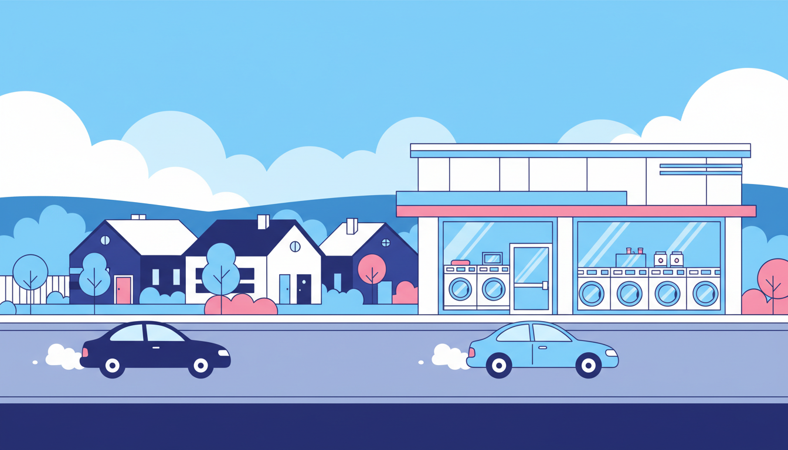

Melbourne's western suburbs are growing fast. From established hubs like Footscray and Sunshine to rapidly developing areas like St Albans, Deer Park, and Keilor Downs, the west is home to a diverse, vibrant community that's expanding year on year. With that growth comes an increasing need for modern, reliable laundromat services — and not all laundromats are created equal.
Whether you're new to the area, searching for a better laundromat than the one you've been using, or visiting a laundromat for the first time, here's what to look for and where to find the best options in Melbourne's west.
What Makes a Great Western Suburbs Laundromat?
The difference between a good laundromat and a frustrating one often comes down to a few key factors. When you're choosing where to do your washing, here's what matters most.
Modern, Well-Maintained Machines
Old, rattling machines that take three cycles to get anything clean are a waste of your time and money. A great laundromat invests in modern commercial machines that wash thoroughly in a single cycle, spin efficiently to remove water, and dry properly without overheating your clothes. Look for a range of machine sizes too — from standard loads to large-capacity washers for doonas, blankets, and bulky items.
Card Payment Without the Fees
It's 2026 — nobody wants to hunt for a handful of gold coins before doing their washing. The best laundromats accept card and tap payments as standard. But here's something to watch out for: some laundromats charge a surcharge of 10 to 15 per cent on card payments, which quietly adds up over time. The truly good ones absorb that cost and charge you the same price regardless of how you pay.
Fair, Transparent Pricing
You should know exactly what a wash and dry will cost before you start. The best laundromats have clear, simple pricing displayed on the machines or on signage in the store. No hidden fees, no confusion about which cycle costs what, and no surprises when you tap your card.
Good Opening Hours
Life doesn't run on a strict schedule, and your laundromat shouldn't either. Early morning starts (6 AM or earlier) and late closing times (9 PM or later) give you the flexibility to fit laundry around work, family, and everything else. Seven-day-a-week access is essential — laundry doesn't take weekends off.
Clean and Safe Environment
A laundromat should feel welcoming, not grim. Good lighting, clean floors, well-maintained machines, and a tidy folding area all make the experience more pleasant. Security cameras and a visible, well-lit shopfront also matter, especially if you're visiting in the evening.
Western Suburbs Areas We Cover
Melbourne's western suburbs stretch from the inner-west neighbourhoods along the Maribyrnong River all the way out to the rapidly growing communities around Deer Park and beyond. Here are some of the key areas where people are looking for quality laundromat services.
St Albans
St Albans is one of the most culturally diverse suburbs in Melbourne, with a thriving food scene and a strong community feel. It's also an area where a lot of residents live in apartments, townhouses, and share houses — the exact situations where a reliable laundromat becomes essential. The suburb is well connected by train (St Albans station on the Sunbury line) and sits at the crossroads of several major roads, making it easy to get to from surrounding suburbs.
Sunshine and Sunshine West
Sunshine has undergone enormous transformation in recent years, with new apartment developments, upgraded transport links, and a growing population. As more people move into higher-density housing, the demand for quality laundromat services in the area continues to grow. Sunshine West, with its mix of established homes and new builds, is in a similar position.
Footscray
Footscray has long been one of Melbourne's most vibrant inner-western suburbs, known for its incredible food, cultural diversity, and a population that skews younger. The high proportion of renters, students, and share-house residents makes it a natural laundromat market. People here want modern, convenient services — not a dingy room with machines from the 1990s.
Maribyrnong
Sitting along the Maribyrnong River, this suburb has seen significant residential development in the past decade. New apartments and townhouse complexes line Rosamond Road and the streets around Highpoint Shopping Centre, and many of these dwellings don't have the space (or the plumbing) for a full-size washer and dryer. A nearby, modern laundromat is a genuine necessity for many residents here.
Deer Park and Keilor Downs
Further west, suburbs like Deer Park and Keilor Downs are growing rapidly. These family-oriented communities are home to larger households that generate more laundry — and when the home machine breaks down or can't handle the big stuff, a commercial laundromat becomes the obvious solution. The challenge in these areas has traditionally been finding a modern laundromat rather than a tired, outdated one.
Laundry Day in Melbourne's Western Suburbs
We built Laundry Day to be the kind of laundromat that people actually enjoy visiting — bright, clean, modern, and genuinely good value. Two of our three Melbourne locations are right in the heart of the western suburbs, purpose-built to serve the communities around them.
Laundry Day St Albans
You'll find us at 4/329 Main Road East, St Albans, right next to Monster Chicken and a short walk from St Albans station. Our St Albans store features a full range of washers including giant 27KG machines for doonas, blankets, and heavy loads. Detergent is free, card fees are zero, and we're open seven days a week from 6 AM to 10 PM. Whether you're coming from St Albans itself, Sunshine, Deer Park, Keilor Downs, or anywhere nearby, we're easy to reach by car, bus, or train.
Laundry Day Maribyrnong
Our Maribyrnong store is at 103 Rosamond Road, on the corner of Emu Road. It's a convenient spot for anyone in Maribyrnong, Footscray, West Footscray, Maidstone, or the Highpoint area. Same deal as all our stores — modern machines, free detergent, zero card fees, and opening hours that actually fit your schedule (6 AM to 10 PM, every day of the week). If you've been driving past tired old laundromats in the area, come see the difference a modern one makes.
Plus Brunswick East for the Inner North
If you're closer to the inner north, our third location at 220 Lygon Street, Brunswick East serves the Brunswick, Carlton, Fitzroy North, and Northcote communities. All three stores offer the same great experience — consistent quality, wherever you are in Melbourne.
What You Get at Every Laundry Day Location
No matter which of our three stores you visit, the experience is the same:
Giant 27KG washers for doonas, sleeping bags, blankets, and big family loads. Free detergent dispensed automatically with every wash — no need to bring your own. Zero card fees — pay by card or cash with no surcharge either way. Open 7 days, 6 AM to 10 PM — early mornings, late evenings, weekdays and weekends. Bright, clean, modern stores with well-maintained machines and a welcoming atmosphere.
Melbourne's western suburbs deserve a laundromat that matches the energy and growth of the community. If you've been putting up with old machines, coin-only payment, and dingy shopfronts, it's time to try something better. Drop into Laundry Day at St Albans or Maribyrnong and see the difference for yourself.
Find Us in Melbourne's West
Modern machines, free detergent, zero card fees. Visit Laundry Day in St Albans, Maribyrnong, or Brunswick East.
Find Your Nearest Location